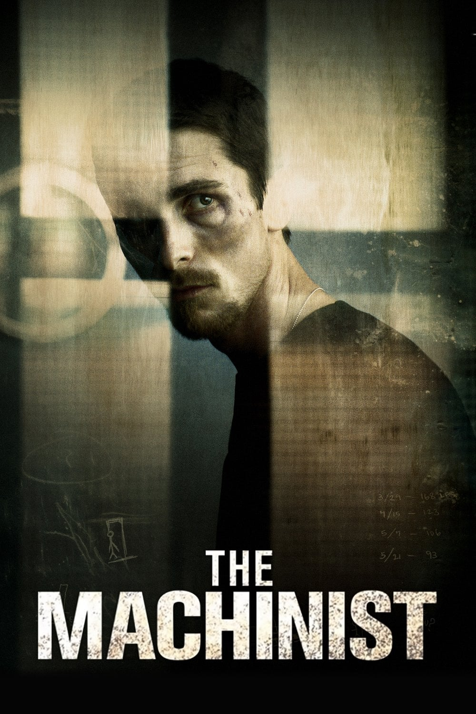

Nuit du sommeil
The Machinist
Trevor Reznik est ouvrier dans une usine. Un métier répétitif, fatiguant, usant, au milieu d'un bruit assourdissant, où la moindre inattention peut avoir des conséquences dramatiques. Une attention que Trevor a du mal à maintenir, car il est très fatigué. En fait, Trevor n'a pas dormi depuis un an.
durée: 102 min

RRR